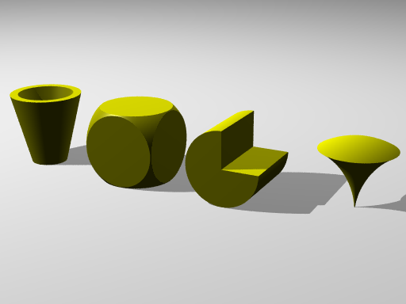

|
|
Assignment 03
-
(20) Complete the following exercises from the textbook: Pages 53-54, questions 1-5.
-
(30) Complete questions 1-6 on pages 54-55. You will need the files lights.pov and pawn.inc.
-
(30) Do your best to recreate the following image using CSG operations. Submit both your .pov file as well as a rendered 600x800 bmp image of your objects.

-
(20) Create an image with 3 objects using CSG operations, like the one above. Experiment with the various operations and combinations of operations, and use the finish directive to texture your objects. Submit both your .pov file as well as a rendered 600x800 bmp image of your objects.
back to the Assignment page
|